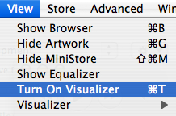

|
OverviewWhen the user selects the Turn On Visualizer menu item in the View menu in iTunes, custom visual special effects appear. Figure 1: Turn On Visualizer menu item  iTunes plug-ins are implemented on Mac OS X as shared libraries, and on Windows as Dynamic Link Libraries (DLLs). For ease of implementation across different architectures, iTunes plug-ins export a single entry point. In addition, plug-ins do not link against the iTunes application. Instead, a callback function pointer is provided to your plug-in during initialization, and the iTunes API calls are implemented via that function. iTunes sends messages to your plug-in to tell it when to initialize and clean up, when the user turns visual effects on and off, when the window is resized, when the user starts or stops playing music, etc. When visual effects are on, iTunes will forward keyboard, mouse, and update events for the visual effects window to your plug-in. Messages are described in more detail below. While music is playing, iTunes sends render messages that include waveform data (sound samples) corresponding to the music that is currently playing, and a spectrum analysis of the samples. During registration, your plug-in indicates the number of channels of waveform and spectrum data it wants, and how often it wants to receive render messages. During registration, your plug-in indicates if it wants to receive idle messages. Idle messages are sent periodically whether music is playing or not. When the music stops, you can draw in response to idle messages to fade out your visual effects smoothly. Your plug-in can have preferences that get stored in the iTunes preferences file. The iTunes API includes functions to access your plug-in's preferences. iTunes sends the configure message when the user clicks on the options button to tell you to show your settings dialog. Plug-in discovery and registrationOn Windows, iTunes recursively scans the folder named "Plug-Ins", which is located beside the iTunes.exe application itself, for visual plug-in files having the .dll extension. On Mac OS X, iTunes recursively scans the plug-ins folder which is located at ~/Library/iTunes/iTunes Plug-ins/ (and /Library/iTunes/iTunes Plug-ins/ if that directory exists), and only that folder, for plug-ins. On Mac OS X, iTunes recognizes plug-ins packaged as bundles with A visual plug-in sample code is provided for both Windows and Mac OS X formats in the iTunes Visual Plug-in SDK. A plug-in library exports a single entry point. The name of the exported function depends on how the plug-in is packaged. For Windows plug-in DLLs, the name of the main entry point must be "iTunesPluginMain". For Mac OS X plug-in shared libraries, the name of the entry point must be "iTunesPluginMainMachO". For each plug-in found, iTunes sends a To register a visual plug-in, you call It is not necessary to unregister visual plug-ins. When it's time to shut down, a For compatibility with future versions of iTunes, if your plug-in receives a message it does not recognize, it should return Messages in Detail1. Plug-in main entry point messagesThese messages are sent to your plug-in main entry point, which has the following signature: OSStatus main(OSType message, PluginMessageInfo * messageInfo, void * refCon);
what message is being sent
a pointer to additional parameters, if any.
the value you returned in This table lists the plug-in main entry point messages and corresponding Table 1: Plug-in main entry point messages
kPluginInitMessageThis message is sent to your plug-in library at launch time. You should register your plug-ins by calling
enum {
/* PluginInitMessage.options */
/* Send idle messages to plugin main */
kPluginWantsIdleMessages = (1L << 1),
/* Don't close this plugin just because it didn't register anyone */
kPluginWantsToBeLeftOpen = (1L << 2),
/* The plugin wants to be notified when volumes are mounted/unmounted/renamed */
kPluginWantsVolumeMessages = (1L << 3),
/* The plugin wants to know when the display depth/size changes */
kPluginWantsDisplayNotification = (1L << 5)
};
struct PluginInitMessage {
UInt32 majorVersion; /* Input */
UInt32 minorVersion; /* Input */
void * appCookie; /* Input */
ITAppProcPtr appProc; /* Input */
OptionBits options; /* Output */
void * refCon; /* Output */
};
the version of the iTunes API implemented by the iTunes application.
parameters to be passed to the callback APIs
return options parameters (see flags above) to specify whether you want to receive idle messages, know about display depth/size changes, and so on.
the value you return here will be passed back as the
This message is intended for use by device plug-ins. Visual plug-ins that want idle time register for
This message is sent to your plug-in when iTunes is about to quit. 2. Visual plug-in messagesA visual plug-in message handler has the following signature: OSStatus VisualPluginHandler(OSType message, VisualPluginMessageInfo * messageInfo, void * refCon);
what message is being sent.
a pointer to additional parameters, if any.
the value you returned in This table lists the visual plug-in messages and corresponding Table 2: Visual plug-in messages
kVisualPluginInitMessageThis message is sent right after you register your plug-in with
enum {
/* Initialize options */
/* monitor will not resolution switch in fullscreen mode */
kVisualDoesNotNeedResolutionSwitch = (1L << 0), /* Added in 7.0 */
/* iTunes will not erase Visualizer background to black. Visualizer
plugin must do it. */
kVisualDoesNotNeedErase = (1L << 1) /* Added in 7.0 */
};
struct VisualPluginInitMessage {
UInt32 messageMajorVersion; /* Input */
UInt32 messageMinorVersion; /* Input */
NumVersion appVersion; /* Input */
void * appCookie; /* Input */
ITAppProcPtr appProc; /* Input */
OptionBits options; /* Output */
void * refCon; /* Output */
};
messageMinorVersion the version of the iTunes API implemented by the iTunes application.
the version of iTunes that is running.
appProc The plug-in should copy these two fields into its private data since it will need to pass them as parameters to all the iTunes APIs described below.
return options here (see flags above) to prevent monitor resolution switch in fullscreen mode and erasing of the Visualizer background to black.
the value returned in this field will be passed as the kVisualPluginCleanupMessageThis message is sent when iTunes is about to quit. You should free any resources allocated by your visual plug-in at this time. kVisualPluginIdleMessageThis message is sent periodically if the plug-in requests idle messages. Do this by setting the kVisualPluginConfigureMessageThis message is sent when the user clicks on the Options button at the top right of the iTunes window. Enable the Options button (and this message) by setting the kVisualPluginEnableMessagekVisualPluginDisableMessageiTunes currently enables all loaded visual plug-ins. Your plug-in should simply return kVisualPluginShowWindowMessageSent when visual effects are turned on. At this point, the plug-in should allocate any large buffers it needs.
struct VisualPluginShowWindowMessage {
GRAPHICS_DEVICE GRAPHICS_DEVICE_NAME; /* Input */
Rect drawRect; /* Input */
OptionBits options; /* Input */
Rect totalVisualizerRect; /* Input -- Added in 7.0 */
};
the graphics device to draw into. The plug-in should remember this since it is not sent with render or update messages.
the rect to draw into. The plug-in should remember this since it is not sent with render or update messages.
the only option currently defined is
the total rect the visualizer is running in. The drawRect (see above) will always be smaller than or equal in size to this rect, and the ratio of these two rects is controlled by the user's "Visualizer Size" setting in the iTunes preferences. kVisualPluginHideWindowMessageThis message is sent when visual effects are turned off. Your plug-in should free any large buffers allocated in the course of rendering here. kVisualPluginSetWindowMessageThis message is sent when the user resizes the iTunes window or toggles full screen mode. It is conceptually the same as a kVisualPluginRenderMessageThis message is sent periodically when music is playing, at a rate specified during registration.
struct VisualPluginRenderMessage {
RenderVisualData * renderData; /* Input */
UInt32 timeStampID; /* Input */
UInt32 currentPositionInMS; /* Input */
};
struct RenderVisualData {
UInt8 numWaveformChannels;
UInt8 waveformData[kVisualMaxDataChannels][kVisualNumWaveformEntries];
UInt8 numSpectrumChannels;
UInt8 spectrumData[kVisualMaxDataChannels][kVisualNumSpectrumEntries];
};
The number of channels of waveform data included. This will be the number you requested during registration.
The most significant 8 bits of the sound samples that are currently playing. The values range from 0 to 255, where 128 is the midpoint (AC zero value).
The number of channels of spectrum data included. This will be the number you requested during registration.
This is a 512-point Fast Fourier Transform of the waveform data. kVisualPluginUpdateMessageThis message is sent in response to an update event. The visual plug-in should update into its remembered port. This will only be sent if the plug-in's window is showing, i.e. in between kVisualPluginPlayMessageThis message is sent when iTunes starts playing a track. Your plug-in should copy any track info it wants to display. Also, when streaming an internet radio station the track info contains the name (and meta data) for the radio station, and the song name (and its meta data) is in the
struct VisualPluginPlayMessage {
ITTrackInfoV1 * trackInfo; /* Input */
ITStreamInfoV1 * streamInfo; /* Input */
SInt32 volume; /* Input */
UInt32 bitRate; /* Input */
SoundComponentData oldSoundFormat; /* Input */
ITTrackInfo * trackInfoUnicode; /* Input */
ITStreamInfo * streamInfoUnicode; /* Input */
AudioStreamBasicDescription audioFormat; /* Input -- added in 7.1 */
};
kVisualPluginChangeTrackMessageThis message is sent when the information about a track changes, e.g., when the user edits track info, or when iTunes begins playing a different track. Your plug-in should copy any track info it wants to display. Also, when streaming an internet radio station the track info contains the name (and meta data) for the radio station, and the song name (and its meta data) is in the
struct VisualPluginChangeTrackMessage {
ITTrackInfoV1 * trackInfo; /* Input */
ITStreamInfoV1 * streamInfo; /* Input */
ITTrackInfo * trackInfoUnicode; /* Input */
ITStreamInfo * streamInfoUnicode; /* Input */
};
kVisualPluginStopMessageThis message is sent when the music stops playing. kVisualPluginSetPositionMessageThis message is sent when iTunes changes the elapsed time position within a track. A plug-in that shows the elapsed time would use this.
struct VisualPluginSetPositionMessage {
UInt32 positionTimeInMS; /* Input */
};
iTunes does not currently use pause or unpause. A pause in iTunes is handled by stopping and remembering the position. Your plug-in should simply return kVisualPluginEventMessageThis message is sent when the user generates an event that could be handled by your plug-in. If your plug-in handles the event, it should return
struct VisualPluginEventMessage {
EventRecord * event; /* Input */
};kVisualPluginDisplayChangedMessageThis message is sent when something about the display environment (bit depth, for example) has changed. If your plugin handles the event it should return
enum {
kVisualDisplayDepthChanged = 1 << 0, /* the display's depth has changed */
kVisualDisplayRectChanged = 1 << 1, /* the display's location changed */
kVisualWindowMovedMoved = 1 << 2, /* the window has moved location */
kVisualDisplayConfigChanged = 1 << 3, /* something else about the display changed */
};
struct VisualPluginDisplayChangedMessage {
UInt32 flags; /* Input */
};
Callback APIsAs mentioned in the overview, plug-ins do not link against iTunes. Instead, the first two parameters of all of the iTunes APIs are a cookie and a callback function pointer. These are provided to your plug-in in the init messages. The glue code in iTunesAPI.c takes care of marshaling parameters and calling iTunes for you, so you don't have to worry about the details. OSStatus PlayerRegisterVisualPlugin (void *appCookie, ITAppProcPtr appProc, PlayerMessageInfo *messageInfo); Register your visual plug-in with
/* PlayerRegisterVisualPluginMessage.options */
enum {
/* set to enable kVisualPluginIdleMessage */
kVisualWantsIdleMessages = (1L << 3),
/* set to enable kVisualPluginConfigureMessage */
kVisualWantsConfigure = (1L << 5),
/* set to enable unicodeName */
kVisualProvidesUnicodeName = (1L << 6)
};
struct PlayerRegisterVisualPluginMessage {
/* Input from plugin */
/* Displayed in the Visual menu -- may be empty if options include kVisualProvidesUnicodeName */
Str63 name;
OptionBits options; /* See above */
OSType creator; /* Identifies the plugin */
NumVersion pluginVersion; /* Version number of the plugin */
VisualPluginProcPtr handler; /* Handler for the plugin's messages */
void * registerRefCon; /* RefCon for the plugin's handler */
/* How often to call the plugin (0xFFFFFFFF = as often as possible) */
UInt32 timeBetweenDataInMS;
UInt32 numWaveformChannels; /* 0-2 waveforms requested */
UInt32 numSpectrumChannels; /* 0-2 spectrums requested */
SInt16 minWidth; /* Minimum resizeable width */
SInt16 minHeight; /* Minimum resizeable height */
SInt16 maxWidth; /* Maximum resizeable width */
SInt16 maxHeight; /* Maximum resizeable height */
UInt16 minFullScreenBitDepth; /* 0 = Any */
UInt16 maxFullScreenBitDepth; /* 0 = Any */
UInt16 windowAlignmentInBytes; /* Reserved (should be zero) */
/* options must include kVisualProvidesUnicodeName for this to be used.
Developers are strongly encouraged to provide a Unicode name to ensure
their name will localize properly for other languages. */
ITUniStr255 unicodeName;
};
Your plug-in should call
OSStatus PlayerIdle (
void *appCookie,
ITAppProcPtr appProc);
Show the "About iTunes" window.
void PlayerShowAbout(
void *appCookie,
ITAppProcPtr appProc);
Tell iTunes to open a URL. The
void PlayerOpenURL (
void *appCookie,
ITAppProcPtr appProc,
SInt8 * urlString,
UInt32 length);
Read data identified by your plug-in's name from the iTunes preferences file. This can be used to store your plug-in's preferences as a single block of data. Your plug-in's name is specified in
OSStatus PlayerGetPluginData (
void *appCookie,
ITAppProcPtr appProc,
void *dataPtr,
UInt32 dataBufferSize,
UInt32 *dataSize);
Save data identified by your plug-in's name from the iTunes preferences file. This can be used to store your plug-in's preferences as a single block of data. Your plug-in's name is specified in
OSStatus PlayerSetPluginData (
void *appCookie,
ITAppProcPtr appProc,
void *dataPtr,
UInt32 dataSize);
Read data identified by
OSStatus PlayerGetPluginNamedData (
void *appCookie,
ITAppProcPtr appProc,
ConstStringPtr dataName,
void *dataPtr,
UInt32 dataBufferSize,
UInt32 *dataSize);Save data identified by
OSStatus PlayerSetPluginNamedData (
void *appCookie,
ITAppProcPtr appProc,
ConstStringPtr dataName,
void *dataPtr,
UInt32 dataSize);Ask iTunes to handle an event. The sample code uses this in its
OSStatus PlayerHandleMacOSEvent (
void *appCookie,
ITAppProcPtr appProc,
const EventRecord *theEvent,
Boolean *eventHandled);
Return your plug-in's
OSStatus PlayerGetPluginFileSpec(
void *appCookie,
ITAppProcPtr appProc,
FSSpec *pluginFileSpec);Tell iTunes to enter or exit full screen mode. If your plug-in wants to behave like a screen saver it could use this.
OSStatus PlayerSetFullScreen (
void *appCookie,
ITAppProcPtr appProc,
Boolean fullScreen);
Specify bit depth and resolution for subsequent uses of full screen mode. If your plug-in has a user interface for setting these options, call this to update the values from what you specified in
OSStatus PlayerSetFullScreenOptions (
void *appCookie,
ITAppProcPtr appProc,
SInt16 minBitDepth,
SInt16 maxBitDepth,
SInt16 preferredBitDepth,
SInt16 desiredWidth,
SInt16 desiredHeight);
Return the track cover art for the currently playing song.
OSStatus PlayerGetCurrentTrackCoverArt (
void *appCookie,
ITAppProcPtr appProc,
Handle *coverArt,
OSType *coverArtFormat);
Document Revision History
Posted: 2007-11-13 |
|